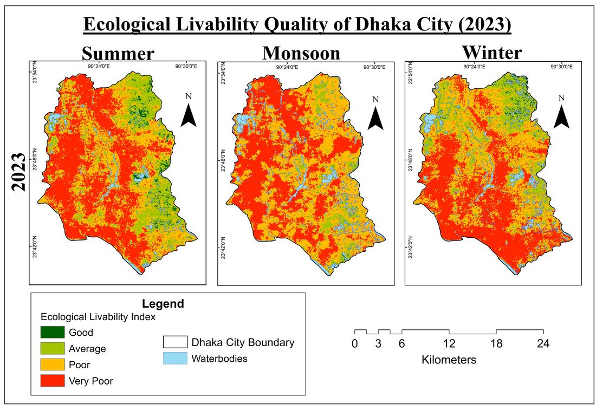
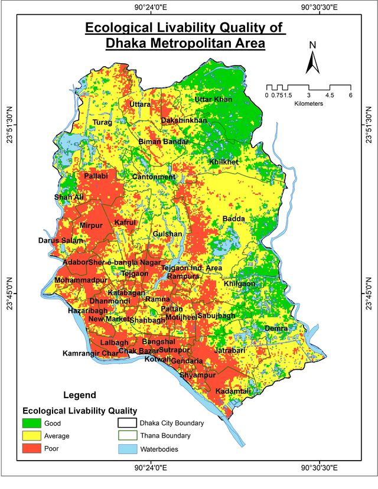

Greenness · NDVITemperature · LSTDryness · NDBSIWater-wetness · distance to waterAir · aerosol optical depth

Monsoon was the worst season: 52.03% of the city rated poor and 40.39% very poor.
Share of the city rated poor or very poor in winter

- Good
- Uttar Khan, Dakshin Khan, Khilkhet, Khilgaon, Demra, Shah Ali, Cantonment
- Average
- Turag, Uttara, Biman Bandar, Badda, Gulshan, Shahbagh, Sher-e-Bangla Nagar
- Poor
- Pallabi, Mirpur, Darus Salam, Kafrul, Adabor, Mohammadpur, Tejgaon, Rampura, Dhanmondi, Paltan, Motijheel, Jatrabari and most of Old Dhaka
Maps from Pobon, Coalee & Mahmud (2024) · View on ResearchGate